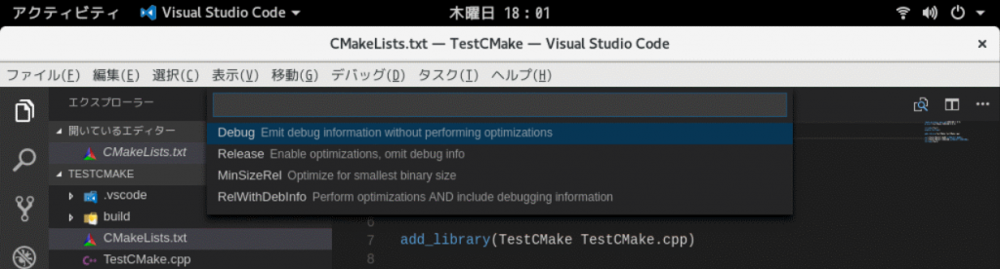
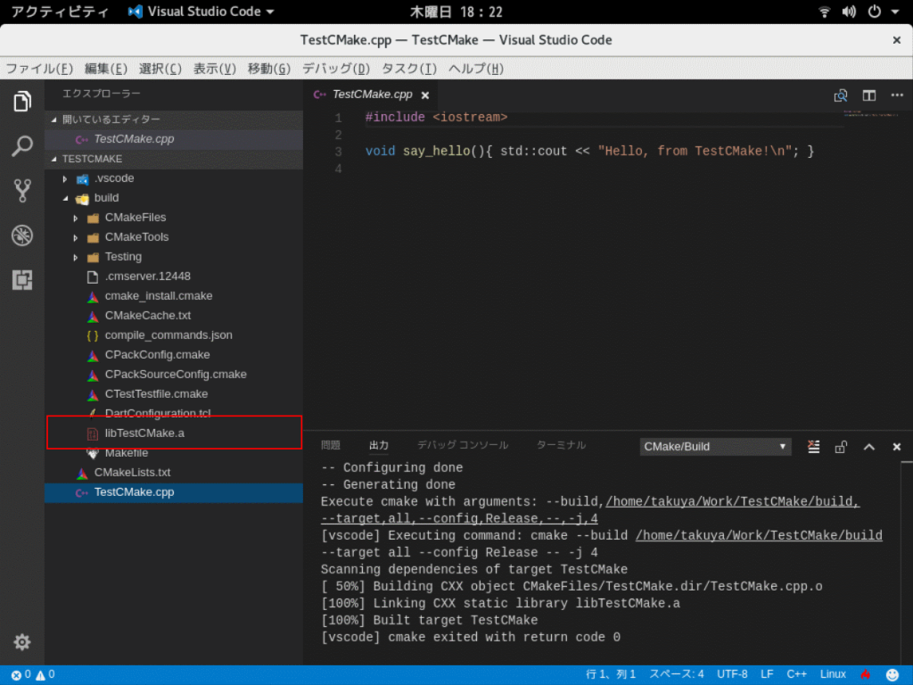

Problem
前回は、Visual Studio CodeからC++で開発を行う環境の構築を行いました。
Visual Studio Codeでの開発情報も増えつつありますが、まだまだLinux上での開発記事は少ないです。
CMakeの知識が少ないと、
- .a
- Staticライブラリ
- .so
- Sharedライブラリ
の作成を切り替えることもままなりません。
Solution
Initialize Project
CMake Toolsを使うと、ボイラープレートよろしくプロジェクトのテンプレートを作成することができます。
まず、空のフォルダをVisual Studio Codeで開きます。
{kind=link}
次に、コマンドパレットから、CMake: Quick Startを選択または入力します。
{kind=link}
次に、プロジェクト名を入力します。
{kind=link}
次に、プロジェクトの種別を選択します。
- Library
- Staticライブラリ
- Executable
- 実行形式モジュール
の2形式を選択できます。Staticライブラリは後で変更できます。
今回は、Libraryを選択。
{kind=link}
ビルド構成を選択します。

これでテンプレートが完成します。
{kind=link}
Build Project
この状態で、一度ビルドを行います。
コマンドパレットから、CMake: Buildを選択または入力します。
{kind=link}
ビルドが成功すると、buildフォルダの配下に、lib<プロジェクト名>.aが生成されます。

テンプレートなので、ソースファイルは、**<プロジェクト名>.cpp**という下記の内容のファイルです。
{kind=link}
1 |
|
シンプルですが、これでStaticライブラリが簡単に生成できます。
Create Shared Library (*.so)
続いては、Sharedライブラリを作成する方法です。
CMakeLists.txtを開きます。
1 | add_library(TestCMake TestCMake.cpp) |
を
1 | add_library(TestCMake SHARED TestCMake.cpp) |
に変更し、再度ビルドします。
すると、今度は、build フォルダの配下に、lib<プロジェクト名>.so が生成されます。
{kind=link}
Sharedライブラリを作れるようになったので、C#からP/Invokeで呼び出すこともできるようになります。